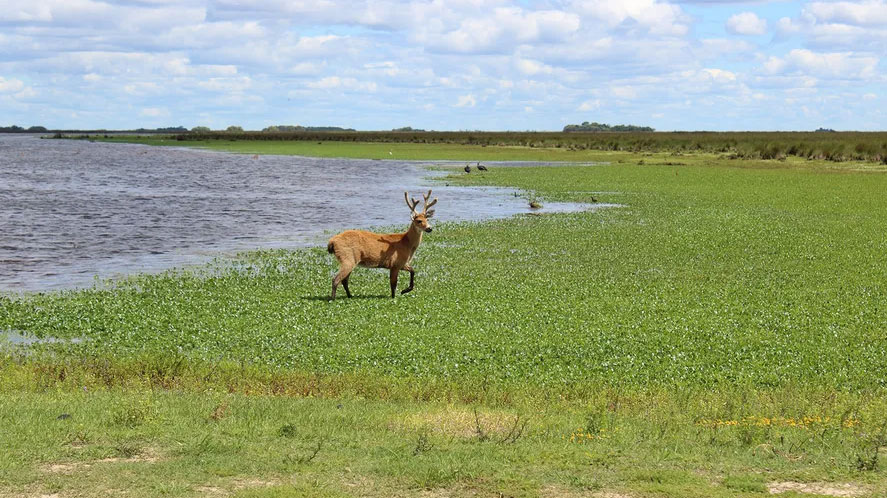
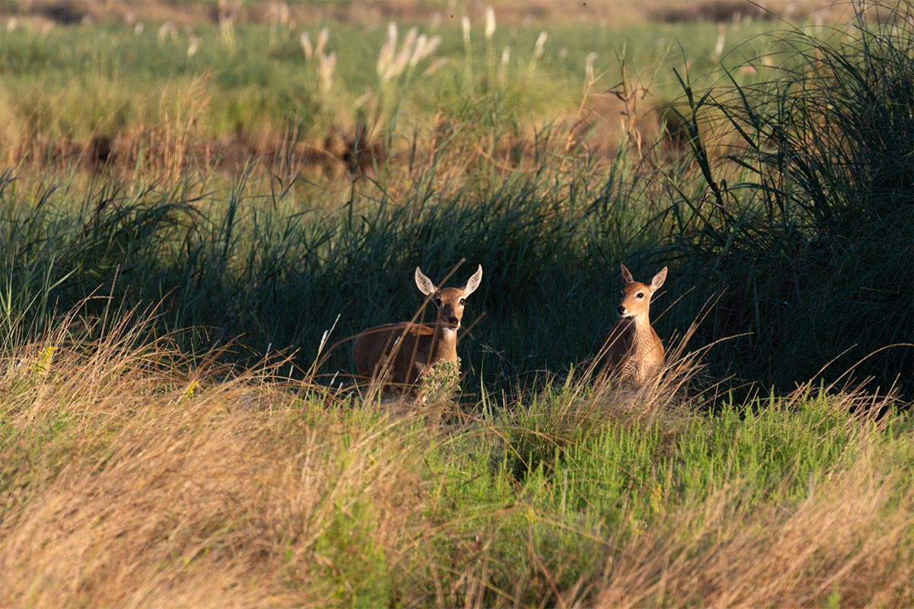
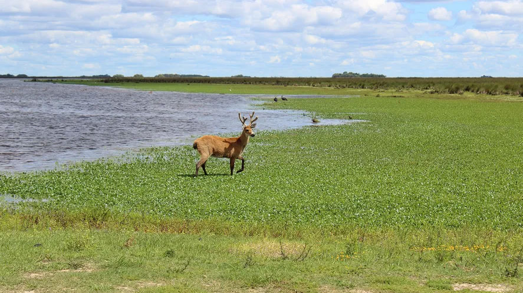
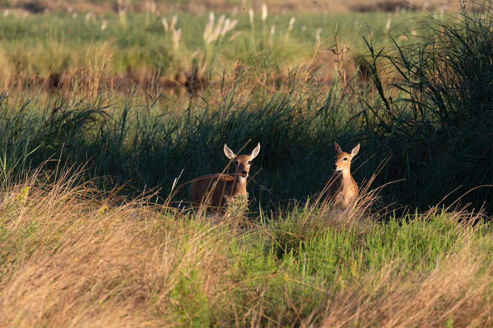

El Parque Nacional Campos del Tuyú, ubicado en la provincia de Buenos Aires, es un tesoro natural que abarca extensas llanuras y humedales. Este parque protege un ecosistema único que alberga una rica diversidad de flora y fauna, incluyendo especies autóctonas y migratorias. Su paisaje está marcado por campos de pastizales, lagunas y ríos, lo que lo convierte en un destino ideal para los amantes de la naturaleza, la observación de aves y el ecoturismo. Además, el parque es un espacio de conservación que promueve la sostenibilidad y la educación ambiental, brindando a los visitantes la oportunidad de conectarse con la belleza natural de la región.
Además de su riqueza natural, Campos del Tuyú ofrece oportunidades para actividades recreativas como senderismo, fotografía y turismo de aventura, permitiendo a los visitantes conectar profundamente con el entorno. Su belleza serena y su biodiversidad lo convierten en un lugar ideal para escapar del bullicio urbano y disfrutar de la tranquilidad que solo la naturaleza puede brindar. Ven a explorar este tesoro natural y descubre la magia que guarda en cada rincón.